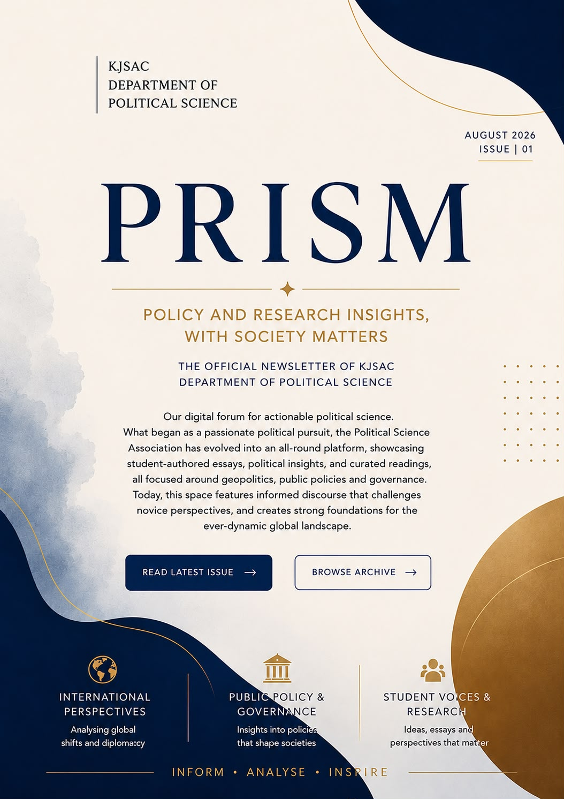

Our digital forum for actionable political science.
What began as a passionate political pursuit, the Political Science Association has evolved into an all-round platform, showcasing student-authored essays, political insights, and curated readings, all focused around geopolitics, public policies and governance. Today, this space features informed discourse that challenges novice perspectives, and creates strong foundations for the ever-dynamic global landscape.

Thoughtful analysis by students on politics, governance and international affairs.
How digital transformation is reshaping governance, accountability and public service delivery.
Read Article →Understanding India's evolving foreign policy in an increasingly complex global order.
Read Article →Why informed student participation remains essential for a vibrant democratic society.
Read Article →Student debates and parliamentary simulations.
Annual flagship Political Science Association festival.
Distinguished speakers discussing governance and public policy.
PRISM is the official digital publication of the KJSAC Department of Political Science. It provides a platform for student research, policy analysis, political commentary, event coverage and academic discussions that encourage informed civic engagement.
Learn More